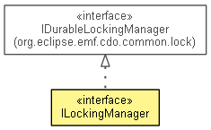

org.eclipse.emf.cdo.server
Interface ILockingManager
- All Superinterfaces:
- IDurableLockingManager
- All Known Subinterfaces:
- InternalLockManager
- public interface ILockingManager
- extends IDurableLockingManager

Manages all persistent aspects of durable CDO views and provides for vetoable
interception of the durable view resumption
process.
- Since:
- 4.1
|
Nested Class Summary |
static interface |
ILockingManager.DurableViewHandler
A call-back interface primarily intended to allow implementers to prevent the view from being opened by throwing an
exception. |
addDurableViewHandler
void addDurableViewHandler(ILockingManager.DurableViewHandler handler)
removeDurableViewHandler
void removeDurableViewHandler(ILockingManager.DurableViewHandler handler)
getDurableViewHandlers
ILockingManager.DurableViewHandler[] getDurableViewHandlers()
Copyright (c) 2011, 2012 Eike Stepper (Berlin, Germany) and others.